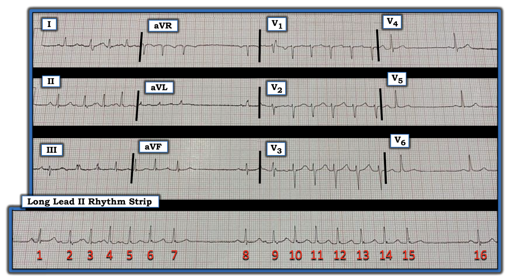
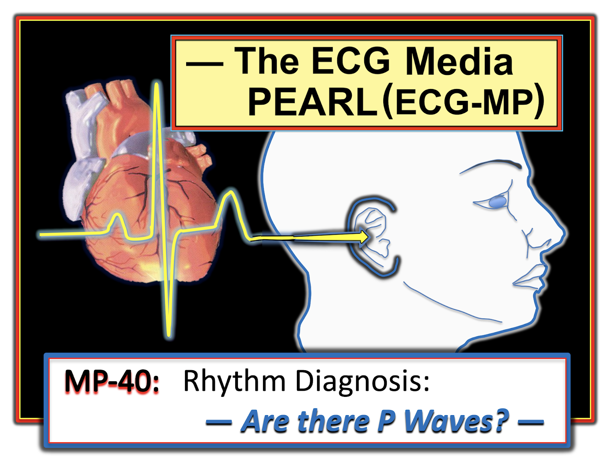
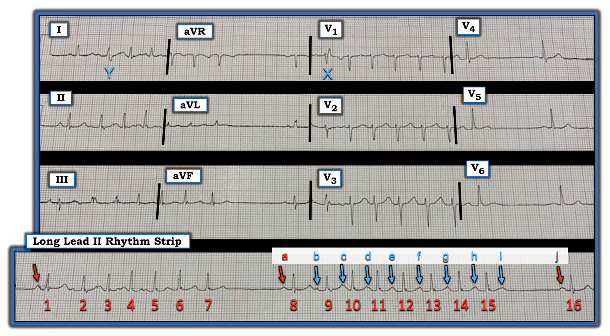
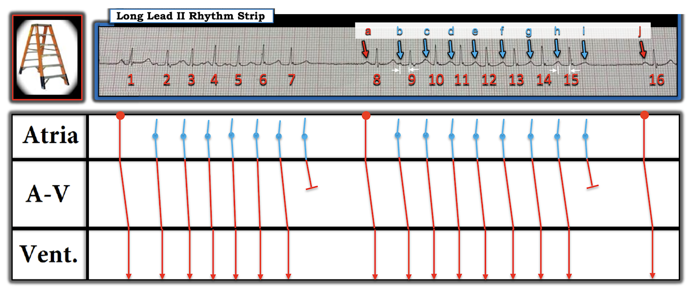
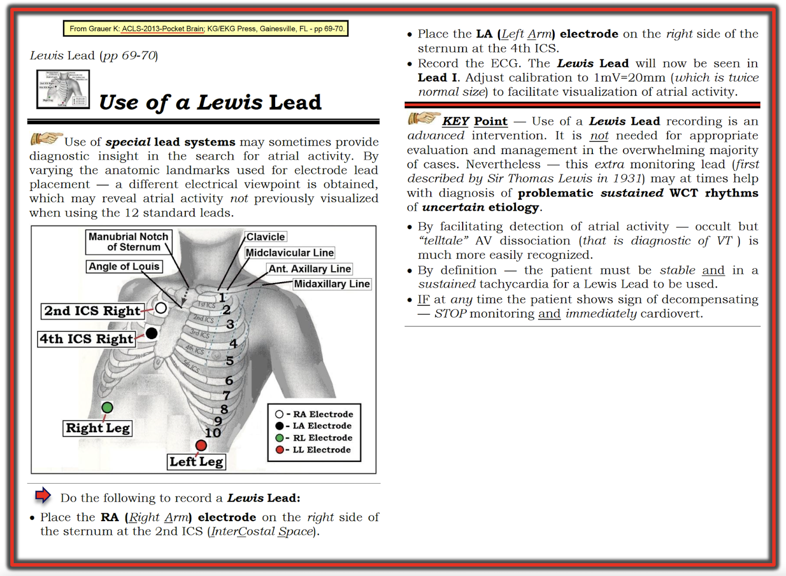

ECG Blog #223 (40) — Sóng P đang làm gì?
Điện tâm đồ ở Hình-1 được ghi từ một bệnh nhân đến khám vì hồi hộp đánh trống ngực. Tiền sử bệnh không có gì đặc biệt. Bệnh nhân ổn định huyết động vào thời điểm ghi điện tâm đồ này. Không có thêm thông tin nào khác.
- Bạn sẽ đọc bản ghi này NHƯ THẾ NÀO?
- Về lâm sàng — Bạn cân nhắc những gì?


=======================================
LƯU Ý #1: Đến đây, một số bạn đọc có thể muốn nghe ECG Audio PEARL dài 9:45 phút trước khi đọc Suy nghĩ của tôi về điện tâm đồ ở Hình-1. Bạn cứ thoải mái xem lại Suy nghĩ của tôi về bản ghi này vào bất kỳ lúc nào (nằm bên dưới ECG MP-40).
=======================================


ECG Media PEARL #40 (Audio 9:45 phút) hôm nay — Ôn lại một số gợi ý trong Chẩn đoán nhịp về việc Đánh giá sóng P và hoạt động nhĩ.
- Xem Hình-4 trong Phần bổ sung bên dưới để biết cách ghi Chuyển đạo Lewis.
Cách tiếp cận ban đầu CỦA TÔI với điện tâm đồ ở Hình-1:
Phần thú vị nhất của bản ghi này là nhịp, như thấy trên dải nhịp dài chuyển đạo II (Hình-1).
- Bản ghi bị chụp nghiêng, do đó hơi bị méo. Dù vậy — các tương quan vẫn đủ nhất quán để đọc chính xác điện tâm đồ này. Điện tâm đồ 12 chuyển đạo được ghi đồng thời với dải nhịp dài chuyển đạo II — nhờ đó dễ đánh giá hình dạng QRS hơn.
- Chỉ có thông tin lâm sàng hạn chế: Chúng ta không biết tuổi bệnh nhân, nhưng được cho biết người này trước đây khỏe mạnh — và, bệnh nhân có triệu chứng hồi hộp đánh trống ngực, nhưng ổn định huyết động khi có nhịp tim này.
- Cái nhìn thứ 1 của tôi vào nhịp cho thấy QRS hẹp ở mọi chuyển đạo (do đó là một nhịp trên thất) — với 2 loạt nhát nhanh ngăn cách bởi những khoảng ngưng ngắn.
- Ngoài nhịp tim — điện tâm đồ 12 chuyển đạo không có gì đáng chú ý. Mọi khoảng và trục đều bình thường — không có lớn buồng tim — và không có thay đổi ST-T cấp.
Xem kỹ hơn nhịp tim:
Đây là một nhịp khó đọc — và tôi hoàn toàn thừa nhận rằng tôi không chắc chắn 100% về câu trả lời. Dù vậy — tôi hy vọng việc "đi qua" từng bước quá trình đánh giá của tôi với nhịp ngoài đời thực này, một nhịp "không tuân theo mọi quy tắc", vẫn sẽ mang lại nhiều điều bổ ích.
- Bất cứ khi nào gặp một bản ghi có nhiều thứ "đang diễn ra" — tôi bắt đầu bằng việc tìm trước một nhịp nền .
- ĐIỂM THEN CHỐT (PEARL) #1: Hãy bắt đầu bằng cách nhìn vào các khoảng ngưng. Ngoài các khoảng ngưng ~1.3 giây giữa nhát #7-8 và giữa #15-16 — tôi nghi rằng có lẽ còn một khoảng ngưng thứ 3 đứng trước nhát #1. Mỗi khoảng ngưng này kết thúc NHƯ THẾ NÀO?
2 loạt nhát trên dải nhịp này gồm 7 nhát (từ #1-đến-7) và 8 nhát (từ #8-đến-15).
- Các loạt nhát trên thất này đều hay hơi không đều?
- Bạn có thấy hoạt động nhĩ trong các loạt nhát này không?
Vượt ra ngoài phần cốt lõi: TẠI SAO nhát #9 ở chuyển đạo V1 trông khác 5 nhát còn lại ở chuyển đạo này?
- Có nhát nào khác trên bản ghi này hành xử theo cùng cách như nhát #9 không?
TRẢ LỜI các câu hỏi này:
Khi giải quyết một rối loạn nhịp phức tạp, tôi thấy cực kỳ hữu ích việc tìm ra và đánh dấu sóng P — điều tôi đã làm ở Hình-2.
- Như Pearl #1 gợi ý — manh mối MẤU CHỐT về nguyên nhân của một rối loạn nhịp phức tạp thường nằm ở một "chỗ ngắt" trong nhịp, nhất là khi "chỗ ngắt" này đi kèm một khoảng ngưng tương đối.
- Mỗi khoảng ngưng trong 3 khoảng ngưng ở Hình-2 đều kết thúc bằng một nhát được dẫn truyền (mũi tên ĐỎ). Dù có khác biệt nhẹ về hình dạng sóng P giữa 3 sóng P được đánh dấu bằng mũi tên ĐỎ — tôi tin mỗi mũi tên ĐỎ này đánh dấu một sóng P xoang vì: i) 3 sóng P này đều lớn hơn các sóng P khác trên bản ghi; ii) Khoảng PR đứng trước các nhát #1, 8 và 16 là như nhau; và, iii) Hợp lý nhất là, dù hình dạng sóng P hơi khác nhau — 3 sóng P có khoảng PR giống hệt nhau này là các nhát xoang được dẫn truyền.
- Dù bị che khuất một phần bởi ST-T đứng trước — các sóng P được đánh dấu bằng mũi tên XANH đều có vẻ nhỏ hơn và có hình dạng giống nhau, so với các sóng P xoang được dẫn truyền trông khác hẳn. Sau sóng P XANH thứ 1 (là sóng "b") — tần số của các sóng P XANH còn lại gần như (dù chưa hẳn) đều. Tôi tin cách đọc nhịp ở Hình-2 hợp lý nhất nếu ta giả định 2 loạt SVT (tức là nhát #2-đến-7 — và #9-đến-15) là 2 loạt nhịp nhanh nhĩ (tức là các nhát nhĩ liên tiếp phát sinh từ một ổ lạc chỗ bên ngoài nút xoang).
- Lý do tôi tin mũi tên XANH cuối cùng (là sóng "i") — là một sóng P không được dẫn truyền — là vì hình dạng sóng T của nhát #15 rõ ràng khác với hình dạng sóng T của nhát #8, vốn không bị biến dạng bởi sóng P ẩn. (Tương tự — hình dạng sóng T của nhát #7 khác với hình dạng sóng T của nhát #1, vốn không bị biến dạng bởi sóng P ẩn).
- Vượt ra ngoài phần cốt lõi: Lý do 2 phức bộ QRS được đánh dấu "X" (ở chuyển đạo V1) và "Y" (ở chuyển đạo I) trông khác các nhát còn lại ở các chuyển đạo này — là vì cả hai nhát đều được dẫn truyền với dẫn truyền lệch hướng dạng RBBB (tức là rSR' ở nhát "X" tại V1 — và sóng S cuối rộng ở nhát "Y" tại chuyển đạo I). Dù khó kiểm chứng với nhát "Y" (vì ta không thấy được khoảng ngưng trước nhát #1 dài bao nhiêu) — lý do nhát "X" dẫn truyền với dẫn truyền lệch hướng dạng RBBB là do Hiện tượng Ashman, trong đó khoảng ngưng trước đó kéo dài thời kỳ trơ tương đối của nhát kế tiếp (Xem ECG Blog #70 để xem minh họa đầy đủ về hiện tượng này).


SUY NGHĨ KẾT THÚC:
Không phải lúc nào chúng ta cũng có thể hoàn toàn chắc chắn về cơ chế của mọi nhịp gặp phải, chỉ dựa trên thông tin có được lúc bệnh nhân đến khám. Điều làm ca hôm nay thêm phức tạp — là thực tế bản ghi được cung cấp bị cong (méo) — và dù là do nhiễu, điện cực tiếp xúc không tốt hay bệnh nhân cử động — hình dạng đoạn ST và sóng P còn xa mới nhất quán như mong muốn. Dù vậy — tôi đề xuất Giản đồ bậc thang (laddergram) ở Hình-3 như phỏng đoán có cơ sở tốt nhất của tôi về cơ chế nhiều khả năng nhất của rối loạn nhịp này.
- ĐIỂM THEN CHỐT (PEARL) #2: Các đặc điểm của Nhịp nhanh nhĩ mà tôi cho là ủng hộ giản đồ bậc thang tôi đề xuất là: i) Tần số nhĩ trong ATach không phải lúc nào cũng đều hoàn toàn. Giai đoạn "khởi động" ("warm-up") ngắn ta thấy ở Hình-3 với nhát thứ 1 của mỗi loạt — tiếp theo là sự gần như đều (nhưng không hoàn toàn) của 6 hay 7 nhát kế tiếp hoàn toàn phù hợp với các loạt ATach; và, ii) Rất hay gặp dẫn truyền Wenckebach trong ATach.
- Dù khó nhận ra — khoảng PR của nhát thứ 1 trong loạt (khoảng cách giữa cặp mũi tên TRẮNG thứ 1) — ngắn hơn khoảng PR của nhát được dẫn truyền cuối cùng trong loạt (khoảng cách giữa cặp mũi tên TRẮNG thứ 2). Tôi tin lý do các sóng P vùi trong sóng T của nhát #7 và 15 không được dẫn truyền — là vì mỗi sóng P này đánh dấu kết thúc một chu kỳ Wenckebach dài, trong đó khoảng PR tăng dần chỉ thấy rõ khi so sánh khoảng PR thứ 1 và cuối cùng trong loạt.
Ý nghĩa lâm sàng: Chúng ta không được cung cấp chi tiết lâm sàng của bệnh nhân hôm nay, ngoài thông tin "tiền sử bệnh không có gì đặc biệt". Vì vậy — các bình luận của tôi chỉ mang tính suy đoán.
- Điện tâm đồ 12 chuyển đạo (Hình-1) không gợi ý thiếu máu cục bộ hay nhồi máu gần đây.
- Tiền sử bệnh "âm tính" gợi ý bệnh nhân khó có khả năng đang dùng thuốc chống loạn nhịp làm thay đổi tần số.
- Sẽ có ích nếu biết tuổi bệnh nhân. Trong số các bệnh cảnh lâm sàng cần cân nhắc có SSS (hội chứng suy nút xoang – Sick Sinus Syndrome) — vì thành phần "nhịp nhanh-nhịp chậm" ("Tachy-Brady") của bệnh cảnh này thường đi kèm với bất kỳ rối loạn nhịp nhĩ nào trong số nhiều loại, thường được theo sau bởi ức chế nút xoang, gây ra các khoảng ngưng xoang.


==================================
Lời cảm ơn: Xin cảm ơn Martin Ghon (từ Anh) đã cung cấp ca bệnh và bản ghi này.
==================================
Các bài ECG Blog liên quan đến ca hôm nay:
- ECG Blog #185 — Cách tiếp cận hệ thống khi đọc nhịp tim.
- ECG Blog #70 — Ôn lại Hiện tượng Ashman.
==================================
PHẦN BỔ SUNG #1 (ngày 13 tháng 5 năm 2021): Tôi trích từ ACLS-2013-ePub của tôi phần hướng dẫn cách ghi Chuyển đạo Lewis, giúp quan sát hoạt động nhĩ (như đã bàn ở trên trong ECG MP-40 Audio Pearl).



PHẦN BỔ SUNG #2 (ngày 14 tháng 5 năm 2021): Hôm nay tôi nhận được bình luận sau đây từ David Richley về ca này. Những ai theo dõi "thế giới các ECG Blog quốc tế" đều biết Dave là một trong những người đọc sắc sảo nhất về cơ chế của các rối loạn nhịp phức tạp.
Dave viết như sau:
"Vâng, ca này khó. Tôi đồng ý rằng các loạt nhanh là những cơn nhịp nhanh nhĩ kịch phát, nhưng chúng có chắc chắn cho thấy blốc Wenckebach không? Có một chút thay đổi ở khoảng PR, nhưng tôi tự hỏi liệu điều này có liên quan đến sự thay đổi nhẹ của tần số nhĩ, và do đó của tính trơ của nút AV, hơn là do dẫn truyền Wenckebach. Tôi đã đánh dấu bằng mũi tên các sóng P lạc chỗ trong cơn nhịp nhanh thứ nhất và tôi nghĩ rõ ràng là khoảng PR không tăng dần một cách có hệ thống. Điều này khiến tôi đặt câu hỏi liệu các cơn nhịp nhanh có kết thúc bằng một sóng P không được dẫn truyền hay không, và tôi thực sự không nghĩ có dấu hiệu nào của sóng P trên sóng T của nhát cuối cùng của cơn nhịp nhanh. Dĩ nhiên, không có lý do gì để một nhịp nhanh nhĩ khu trú có blốc Wenckebach lại bị chấm dứt bởi việc một xung động nhĩ không dẫn truyền được: các xung động nhĩ vẫn tiếp tục được phát ra và các chu kỳ Wenckebach sẽ lặp lại. Chỉ ở những nhịp nhanh nhĩ được duy trì bởi cơ chế vào lại thì blốc Wenckebach mới làm chấm dứt cơn nhịp nhanh — vì trong những trường hợp đó, việc không dẫn truyền được ở một nhánh của vòng vào lại sẽ làm đứt vòng. Theo hiểu biết của tôi, chỉ một tỷ lệ nhỏ nhịp nhanh nhĩ là do vào lại. Tôi đoán rằng cái ta thấy ở đây đơn giản là nhịp nhanh nhĩ kịch phát với tần số nhĩ hơi không đều và khoảng PR thay đổi nhẹ. Tôi không nghĩ có blốc nào cả."
Suy nghĩ CỦA TÔI:
Ca này đầy thách thức. Việc phân định hoạt động nhĩ còn xa mới rõ ràng do bản ghi bị méo. Theo kinh nghiệm của tôi — Wenckebach với chu kỳ dài hơn không phải lúc nào cũng cho thấy khoảng PR kéo dài đều đặn từ nhát này sang nhát kế. Tôi vẫn nghĩ khoảng PR của nhát được dẫn truyền cuối cùng dài hơn khoảng PR đầu tiên trong mỗi loạt của 2 loạt. Sóng T của nhát được dẫn truyền cuối cùng quả có trông khác các sóng T khác — nhưng như tôi đã hoàn toàn thừa nhận, không thể chắc chắn điều này là do một sóng T ẩn hay chỉ là biến thiên ngẫu nhiên.
- ĐIỀU CỐT LÕI: Dave và tôi đều đồng ý rằng nhịp nền là nhịp xoang với các loạt ATach — và tôi tin ĐÓ là điểm quan trọng nhất. Ngoài điều này — Dave có thể đúng, nhưng tôi không nghĩ chúng ta có thể thấy mọi thứ đủ rõ trên bản ghi này để biết chắc chắn. Dù vậy — hy vọng ca này đã tạo nên một cuộc thảo luận thú vị. Như mọi khi — XIN CẢM ƠN David Richley vì những bình luận gợi nhiều suy ngẫm!